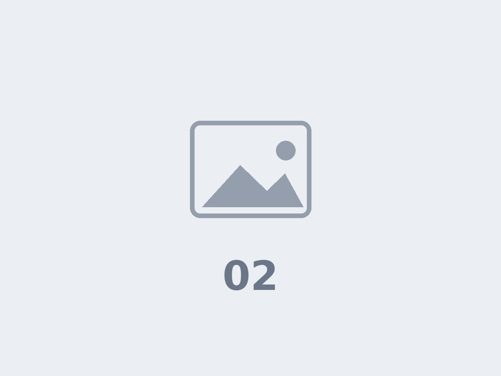
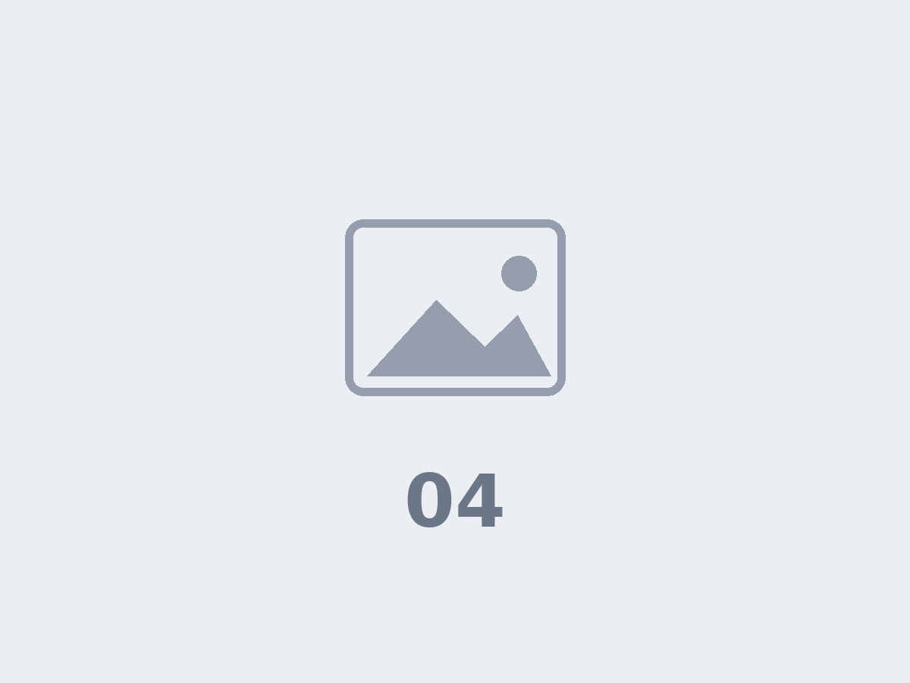
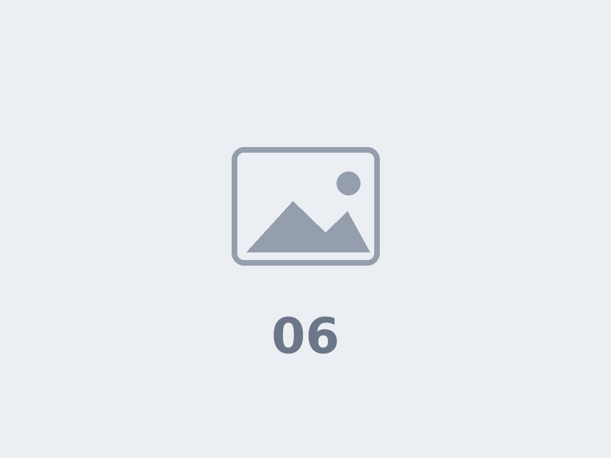
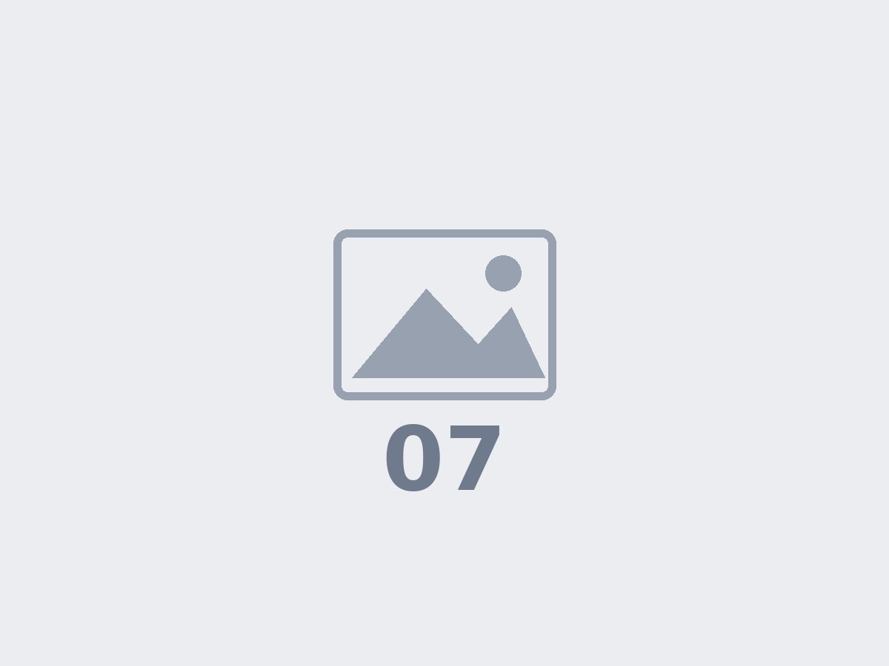

主题架构 · 内容管理WordPress 网站架构WordPress 为内容型和企业网站提供成熟的内容管理能力。通过主题模板、区块编辑器及合理的内容类型设计，可以在保持易用性的同时，建立清晰、可长期维护的网站结构。
页面设计 · 可视化编辑Elementor 可视化建站Elementor 提供直观的拖拽式页面编辑体验，适合快速搭建营销页面和活动落地页。项目中应统一全局样式、控制插件数量，并关注生成代码与页面加载性能。 
产品目录 · B2B 询盘WooCommerce 产品展示WooCommerce 不仅可以用于在线交易，也可以扩展为产品目录与询盘展示系统。结合产品分类、属性和自定义字段，能够为 B2B 网站构建规范、易扩展的产品信息体系。
结构优化 · 搜索可见性技术 SEO 优化从语义化 HTML、页面标题和结构化数据，到 XML Sitemap、Canonical 和页面性能，技术 SEO 应贯穿网站建设与维护流程，并结合 Search Console 持续检查索引状态。 
Core Web Vitals · 缓存性能与缓存策略网站性能优化需要协同处理图片尺寸、WebP/AVIF、缓存、CSS 和 JavaScript 加载方式。使用缓存插件时，应按页面功能逐项测试，避免优化设置影响轮播、表单及动态组件。
安全更新 · 备份恢复网站安全与运维WordPress 日常运维应建立更新、备份、权限和恢复机制。建议在升级核心、主题或插件之前备份文件与数据库，并在测试环境验证兼容性，降低正式网站的维护风险。 
插件架构 · 模块复用WordPress 插件开发将重复功能封装为独立插件，可以减少主题之间的代码耦合。通过清晰的接口、规范的权限校验与可复用组件，使功能更易于升级、测试和迁移。 